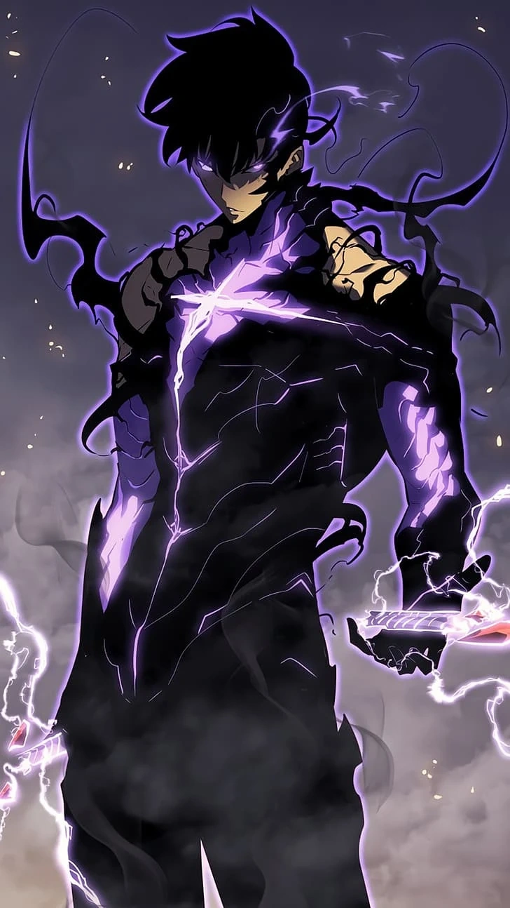

Sung Jin Woo ‐ Main Protagonist

A courageous, kindhearted and intelligent person, Jin-woo constantly put himself in danger going on dungeon raids to put his sister in school and pay for his mother's medical bills. After being chosen by the System he transforms from the weakest hunter alive into the Shadow Monarch, the most powerful being in existence.